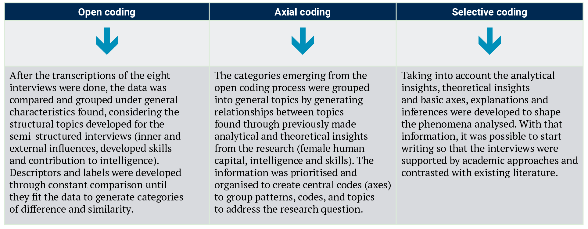
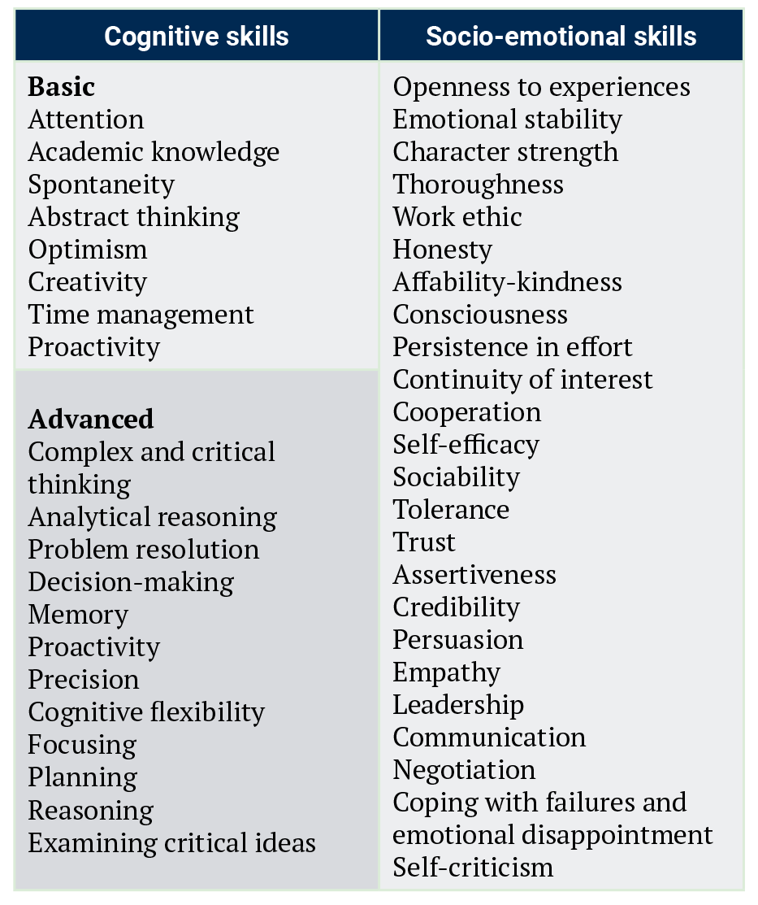
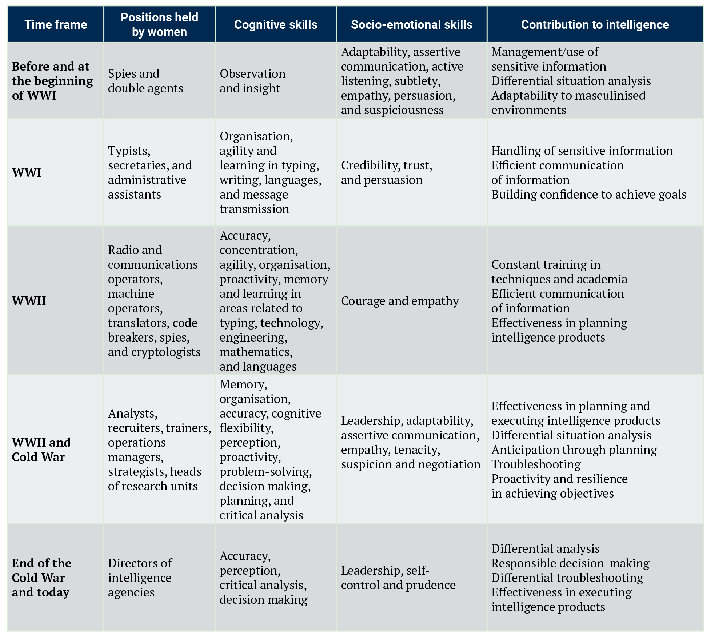
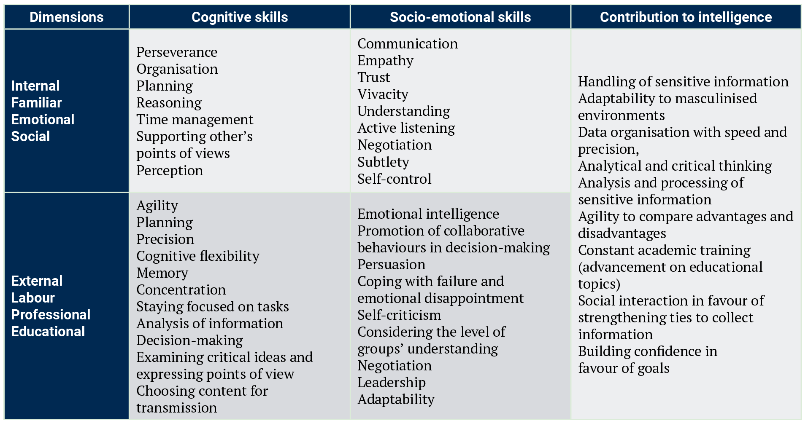

To reference this article / Para citar este artículo / Para citar este artigo: Pirateque Perdomo, P., Ramírez Muñoz, A. G., & Ulloa Sánchez, K. S. (2025). Female human capital in intelligence: women in Colombia’s military intelligence. Revista Criminalidad, 67(3), 115-132. https://doi.org/10.47741/17943108.693.
Pamela Pirateque Perdomo
Magíster en Inteligencia Estratégica
Escuela de Inteligencia y Contrainteligencia
“BG. Ricardo Charry Solano” (ESICI)
Bogotá, Colombia
pamela.pirateque@esici.edu.co
https://orcid.org/0000-0002-5993-3484
Angela Gabriela Ramírez Muñoz
Magíster en Conflicto, Memoria y Paz
Escuela de Inteligencia y Contrainteligencia
“BG. Ricardo Charry Solano” (ESICI)
Bogotá, Colombia
angela.ramirez@esici.edu.co
https://orcid.org/0009-0009-2351-6150
Kelly Stefania Ulloa Sánchez
Profesional en Relaciones Internacionales
y Estudios Políticos
Escuela de Inteligencia y Contrainteligencia
“BG. Ricardo Charry Solano” (ESICI)
Bogotá, Colombia
kellysulloas@gmail.com
https://orcid.org/0000-0002-3119-5870
Gender-based stereotypes in security and defence have limited women’s role in intelligence. Despite that, women’s capital has developed based on their cognitive and socio-emotional skills, that contribute to the understanding of securitisation and decision-making in highly uncertain scenarios. This paper uses grounded theory design under a qualitative methodology to demonstrate the human capital of military women in Colombia through a literature review on women’s role in intelligence and human capital usage, supported by eight semistructured interviews with Colombian military women and intelligence agents. Thus, this article is a theorical contribution to gender studies in the security, defence and intelligence fields, supported by innovative knowledge on the matter taking into consideration the Colombian case. The study yields four conclusions: women’s participation in security is influenced by masculinised socio-cultural contexts that reaffirm gender stereotypes; female human capital represents a valuable asset for intelligence activities and political-military decision-making; military women face a double demand to perform their work activities while preserving their feminine role; establishing spaces that do not restrict women’s recognition and promotion in Colombian intelligence remains an ongoing challenge.
Keywords
Intelligence; women; human capital; skills; army and security
Los estereotipos basados en género en la seguridad y defensa limitan el rol de las mujeres en la Inteligencia. Sin embargo, el capital humano femenino se ha desarrollado basándose en las habilidades cognitivas y socioemocionales que contribuyen al entendimiento de la securitización y la toma de decisiones en escenarios de alta incertidumbre. Este artículo usa la teoría fundamentada bajo una metodología cualitativa con el fin de demostrar el capital humano de las militares colombianas, explicado mediante una revisión de literatura y apoyado por ocho entrevistas semiestructuradas con militares y agentes de Inteligencia colombianas. De esa manera, el presente artículo se establece como una contribución teórica a los estudios de género en los campos de seguridad, defensa e inteligencia, que aporta a la generación de conocimiento tomando como base el caso colombiano. Se encuentran cuatro conclusiones: a) la participación de las mujeres en seguridad es influenciada por contextos socioculturales masculinizados que reafirman estereotipos de género; b) el capital humano femenino representa un activo valioso para las actividades de Inteligencia y la toma de decisiones políticomilitar; c) las mujeres militares enfrentan una doble demanda por hacer sus trabajos mientras preservan su rol de feminidad y d) todavía es un desafío establecer espacios que no restrinjan el reconocimiento y promoción de las mujeres en la Inteligencia colombiana.
Palabras clave:
Inteligencia; mujeres; capital humano; habilidades; ejército y seguridad
Os estereótipos de gênero em segurança e defesa limitaram o papel das mulheres na inteligência. Apesar disso, o capital das mulheres se desenvolveu com base em suas habilidades cognitivas e socioemocionais, que contribuem para a compreensão da securitização e da tomada de decisões em cenários de alta incerteza. Este artigo utiliza um projeto de metodologia da teoria fundamentada em uma metodologia qualitativa para demonstrar o capital humano das mulheres militares na Colômbia por meio de uma revisão da literatura sobre o papel das mulheres na inteligência e sobre o uso do capital humano, com o apoio de oito entrevistas semiestruturadas com mulheres militares colombianas e agentes de inteligência. Assim, este artigo é uma contribuição teórica para os estudos de gênero nas áreas de segurança, defesa e inteligência, apoiada em conhecimentos inovadores sobre o assunto, levando em conta o caso colombiano. O estudo apresenta quatro conclusões: a participação das mulheres na segurança é influenciada por contextos socioculturais masculinizados que reafirmam os estereótipos de gênero; o capital humano feminino representa um ativo valioso para as atividades de inteligência e para a tomada de decisões político-militares; as mulheres militares enfrentam uma dupla demanda para realizar suas atividades de trabalho e, ao mesmo tempo, preservar seu papel de mulher; o estabelecimento de espaços que não restrinjam o reconhecimento e a promoção das mulheres na inteligência colombiana continua sendo um desafio constante.
Palavras-chave
Inteligência; mulheres; capital humano; habilidades; militares e segurança
Intelligence has been intrinsically present in the consolidation of state power, decision-making processes and the pursuit of security and defence interests. Conceptual proposals on its meaning, scope and necessity emerge, permeating classical and contemporary visions about the discipline. Following historical changes in domestic contexts and the influence of international dynamics, intelligence (both as a concept and field) has been forced to redefine itself, which entails a transformation process in the face of new adversaries and threats on the global stage. This discipline is formalised within state institutions from a realist perspective, where security is a military matter that aims to protect territory and sovereignty (Buzan, 1983). In addition, the changing contexts and disruptive nature of the international system influence the configuration of the security and intelligence binomial, adding a determining factor: the qualification of female human capital in security forces.
Although intelligence is defined as a useful tool to mitigate threats, pursue the strategic interests of states, and to assist in the decision-making processes of a state (Warner, 2002), the course of its theorisation has not been studied to such an extent. There is no universally accepted consensus among academics and researchers on doctrinal frameworks, functions, a common language, training processes or the management of women’s human capital in intelligence. Studies on the role of women in intelligence and security have been framed by rigid, masculinised, and exclusionary positions (Pirateque & Chaparro, 2023), given that men are associated with direct contributions to the field, while women are conditioned to indirect intervention because of sociohistorical limitations and restrictions.
Martin (2015) points out the conditioned contributions of women to espionage in the United States. She explains that women have contributed to the field through office work as translators, telephone operators, divers, and cryptologists, despite tolerating widespread sexual and racial harassment by their counterparts. Women did not have opportunities to achieve promotions or more prominent positions because of a lack of mentors, harassment, inflexible working conditions, extended hours, and outside responsibilities. Hence, women have been conditioned by restrictions and limitations in intelligence duties.
Although women formally joined intelligence in the early twentieth century, their participation was limited by gender stereotypes related to the traditional role of mothers, house managers, and family caregivers, as well as biases about their ability to perform in powerful positions, to make decisions autonomously and to execute military operations. Therefore, women were initially assigned to administrative or logistical positions, focusing on assistance work (Proctor, 2006), as mentioned above.
This orthodox structure influenced the role of women in intelligence to the extent that their participation was based on their physical appearance and not on their competencies, capabilities or skills. It even sustained a narrative that women do not participate in conflicts and are only associated with contexts of peace, a theoretical notion that perpetuates the asymmetry and ignorance of women in security spheres, despite the participation of women in different war efforts throughout history. For example, women had crucial participation during the Syrian Civil War through Women’s Protection Units (in YPJs or Yekineyen Parastina Jin), a group comprised of women who aimed to protect their territory and directly respond to armed actions by the Turkish army and Daesh forces (Pirateque et al., 2023b).
With the influence of feminist and critical security studies, Anglo-Saxon countries were the first to explore women’s role in the consolidation and formalisation of intelligence (Shahan, 2021). The United States and the United Kingdom made progress integrating women in masculinised environments, such as military forces, by promoting the reduction of identity and gender gaps. In Latin America, including Colombia, these processes progressed with delay, as they depended on socially accepted behaviours, belief systems, and customs —including as relates to physical appearance and dominant security stereotypes— leaving aside women’s transformative role in intelligence. Thus, recognising women in intelligence services implies generating analytical proposals showing how female human capital contributes to safeguarding security and defence. Sexist customs and practices have historically accompanied the inclusion of women in military or security institutions since their stories or narratives do not often have the same evolution or relevance as those of their male counterparts (Shahan, 2021).
To that end, it is also worth mentioning that gender matters in security studies are still predominately focused on Anglo-Saxon countries and Global North societies because academic discussions on gendered security frameworks often overlook women’s voices on contemporary international security outside the Global North, as a consequence of dominant scholarship production that does not give the same value to a broader range of variables that include other geographies, ideologies, religions, castes and races. The academy, too, is a mirror of the global order and international power dynamics (Medie & Kang, 2018; Pirateque Perdomo et al., 2025). Hence, the need to examine a broader range of perspectives on gendered security studies that takes into account intersecting identities to produce knowledge that captures how diverse, complex and variable women’s experiences are around the world (Medie & Kang, 2018). For this reason, this paper contributes to gendered security studies from and about the Global South, highlighting the need to continue writing and researching on these topics.
The research question this paper aims to address is:
How does female human capital, through its cognitive and socio-emotional skills, become a facilitator of intelligence activities in Colombia’s national army? This will be answered throu[ghout the text with the help of an initial literature review to point out how the case study will be developed, as supported by interviews with women in intelligence in the National Army of Colombia. In order to fulfil the research objective, which is to explain how female human capital facilitates the intelligence activities undertaken by Colombia’s military intelligence, the text is divided as follows: First, the methodological process and research design are presented, followed by a literature review, including a theoretical-analytical framework on intelligence, critical and feminist approaches to intelligence, a conceptual examination of human capital in intelligence and a discussion on how cognitive and socio-emotional skills represent a proposal for female human capital. Third, the findings of the interviews with women in the National Army of Colombia are assessed, delving into the characterisation of the human capital (cognitive and socio-emotional skills) that have helped them fulfil their work.
This qualitative research is exploratory-descriptive under a contextualist grounded theory design. It considers coding and conceptual development to show the influential factors and social processes in the specific context of Colombia’s National Army Intelligence (Glaser & Strauss, 2017). Rather than using a full grounded theory, the present research uses what Braun and Clarke (2013) have defined as grounded theory “lite”, an approach to grounded theory that emphasises coding and conceptual development. The decision to use the lite version of the grounded theory and not the full theory proposed by Glaser and Strauss (2017) resides in the fact that full theory is aimed at larger research projects that are not constrained by time limitations. Meanwhile, the lite version proposed by Braun and Clarke is encouraged for qualitative research that focuses mainly on coding, conceptualizations and interviews as a key method of data collection, which is the focus of the current paper.
The research uses a literature review alongside semistructured interviews with eight women in intelligence inside Colombia’s National Army.1 It is necessary to address that there are certain limitations when it comes to the usage of qualitative interviews, like the participants cognitive biases when it comes to replying, the non-natural environment in which data is collected (because the researcher has a level of control over the interview topics and questions) and the ability of the participants to express what they mean in their own words (Hernández-Sampieri & Mendoza Torres, 2018). Still, the usage of semi-structured interviews is preferable as it aids first-hand understanding of the experiences studied in this research, so as to highlight the voices of the people directly involved in the phenomena under investigation.
On the other hand, the methodological approach consists of a literature review of academic sources that account for theoretical contributions on human capital and the role of women in intelligence and security scenarios. Hence, emphasis is placed on key historical moments where women’s protagonism added assertive criteria to intelligence for strategic planning, the analysis of phenomena, information gathering, and decisionmaking by high-level decision-makers.
To generate a conclusive contribution, the collection and interpretation of empirical information were established using categories and characteristics that bear on an understanding of women’s abilities in intelligence, such as inner context (personal motivation for joining the army) and external context (national and societal factors that influence women’s enlistment), cognitive and socio-emotional abilities, and women’s contribution to intelligence based on a comparison of their own experiences, challenges and experiences of changes within the specialisation. The interview information was transcribed and coded through three different processes: open coding, axial coding and selective coding using qualitative software (NVIVO), as shown in Table 1. This made it possible to demonstrate non-linear influences of cognitive and socio-emotional skills on decisionmaking processes, emphasising the unaddressed areas regarding female human capital based on its personal, social, emotional and labour dimensions.

The interview instrument was semi-structured and built on three thematic axes: a) socio-cultural and identity contexts, b) self-perception and spaces for participation and c) external perception. The interviews were conducted face-to-face with eight women that represent different ranks within the specialisation (six military women, five were commissioned officers, one was a non-commissioned officer and two were high-ranking civilian agents), using non-probabilistic sampling with selection criteria according to their military and civilian ranks, professional profile, and time in the field. This model allowed the interviewees to answer based on their personal experiences and professional development, which characterised the female human capital in Colombian military intelligence. Last but not least, this research followed the principles of credibility and dependency in order to guarantee the quality and rigor of the process. According to Hernández-Sampieri and Mendoza Torres (2018) credibility and dependency are ways of avoiding cognitive biases caused by researcher inexperience, personal ideas, interpretations and conclusions before the research’s conclusion by being clear about the specific details of participant selections, supporting the claims of the research with data, triangulation through the usage of theories, being clear about methods and instruments, documentation of the processes to avoid biases, using analysis softwares, etc. These actions were taken into account for this research.
Intelligence has been classified as a discipline composed of activities, practices and methods that appeal to the security of the nation-state. Intelligence discussions are often situated within realism theories of international relations, where the security of the nation-state is the utmost priority for states’ survival. The theoretical approaches to intelligence are rooted in a state-centric epistemological perspective aimed at safeguarding fundamental elements of the state: territory, population and sovereignty.-
Consequently, theorists of the discipline have linked intelligence with decision-making processes to ensure both domestic security and foreign policy. As a result, the definitions of intelligence might vary among practitioners (from state to state, to intelligence practitioners within national frameworks) according to their interests and strategic objectives. Hence, state decision-makers have employed the term as a tool to guarantee states’ survival and populations’ well-being in highly uncertain contexts (McDowell, 2001).
Works such as Sherman Kent’s Strategic Intelligence for American World Policy laid the concept’s foundation by integrating theory and praxis. Kent believed intelligence is “the knowledge that our men, civilian and military, who occupy high positions, must have to safeguard the national welfare” (Kent, 1966) in the commission of intelligence agencies that can generate synergies between decision-makers and analysts. Additionally, analytical proposals suggest a systematic process for identifying, obtaining, and analysing national security information to respond to political-military decisionmakers’ needs (Lowenthal, 2002).
The fields of action of intelligence imply information sharing to reduce levels of internal and external state uncertainty, allowing the production of specialised knowledge that enables governments and military commanders to achieve victory in times of war and peace (Tzu, 2007). The idea of intelligence as an instrument of daily use to meet knowledge needs and adopt courses of action against various threats provides a real strategic advantage of a defensive-deterrent nature capable of neutralising other actors with hostile intentions (Pirateque, 2021), thereby heading off threats and achieving objectives, even in non-war scenarios.
However, if intelligence is a daily-use instrument that supports security practices, intelligence studies should widen to consider a broader concept of security that includes changing world dynamics (Newbery & Kaunert, 2023). With the formalisation of intelligence agencies (CIA, MI6, KGB, among others) during the Cold War that allowed states to use intelligence to obtain information about the adversary and take anticipatory courses of action to safeguard national security, intelligence became not only a pillar of state relations and the consolidation of power but, also, a way to integrate multidimensional visions, specialised knowledge and trained personnel with multidisciplinary skills for defence and deterrence processes (Russell, 2007).
In Latin America, intelligence as a discipline also followed a traditional approach, focusing mainly on state security. It was first linked to dictatorial or authoritarian systems between 1960 and 1970, using internal defence logic with political overtones to combat the expansion of Leftist movements within the frame of the Cold War (Maldonado & Sancho, 2024). Regional intelligence agencies emphasised the domestic sphere to combat subversion, insurgency or to contain communism with repressive methods, becoming political law enforcement with private ends, as with the secret police (Cancelado, 2022).
The post-Cold War world forced Latin American systems —including Colombia’s, as shown later in this paper— to reorganise themselves at the institutional level. This allowed them to adapt to new international threats and leave behind a purely domestic vision, transforming doctrinal elements, regulatory frameworks, and democratic accountability controls while strengthening human capital within institutions.
Intelligence agencies planned the professionalisation of their personnel by providing civilian and military analysts with training, knowledge and skills in other disciplines (Fussell & Lee, 2024). The new post-war architecture makes intelligence the rational tool to mitigate not only war or hostile issues that may arise, but also aspects where the military side is not necessarily foregrounded (Buzan & Wæver, 2003; Trager & Simonie, 1973). For example, intelligence has been used in the private sector for achieving business goals and decisionmaking, showing intelligence has expanded significantly and substantially (Newbery & Kaunert, 2023).
In other words, intelligence —serving as a tool, process and discipline that constantly adapts to the changing world— opens new analytical perspectives that expose human capital as a significant component in intelligence processes. This broadens academic debates on the role of intelligence in national interests and state objectives, also offering insight into wider security concerns. It helps to consider critical security studies include different matters such as health, environmental issues, political challenges, human security and genderbased perspectives in intelligence studies and practice (Newbery & Kaunert, 2023).
According to Manjikian, these broader aspects of intelligence can benefit from feminist philosophy and epistemology to emphasise diversity, inclusion, visibility and unseen variables in intelligence analysis for decisionmaking (Manjikian, 2022). Therefore, it is necessary to mention how including feminist epistemology and methods can help intelligence studies and, rather than labelling a subject as facts or fiction, emphasise knowledge production and an understanding of how it is useful for decision making (Manjikian, 2022). Intelligence is a field where women have always been present, but relegated to secondary roles and silenced by dominant narratives. Feminist epistemology in intelligence should address the problem of invisibility by “making visible” the structural elements of conflict and threat and by incorporating new variables and events into the analysis for decision-making (Manjikian, 2022; Pirateque Perdomo et al., 2025)
This call came from lessons learned since the introduction of gendered narratives in security and defence studies, which encouraged that gendered perspectives be included in all broader aspects of security studies. Such narratives helped to redefine security and its meanings, challenging binary views of gender and national policies that originated in the reproduction of socio-historical patterns, affecting women’s behaviour, place in society, participation in decision-making security processes, and contexts such as war and conflict from a non-secondary perspective (Pirateque Perdomo et al., 2025). Therefore, it may be possible to develop critical and feminist perspectives in intelligence studies to ensure that analytical gaps are not overlooked, variables are included, and new approaches can be considered, such as women’s human capital and case analyses from the Global South.
Intelligence activities are conducted by human beings; thus, the success and efficiency of strategic products depend on the knowledge, capabilities and skills of the personnel in charge of advising the political-military officers on the achievement of proposed objectives. Therefore, intelligence services must have qualified people to reduce problems when collecting, processing and analysing information (Kent, 1966). Understanding dynamics and threats surrounding states—which may deliberately threaten their survival—makes intelligence a process whereby useful information is obtained on actors, events and trends that pose a risk.
The processing and analysis of information must be conducted by qualified and expert personnel, ensuring the transmission of useful and timely knowledge for decision-makers. This is supported by what authors such as Sun Tzu (2007) attribute to the need to obtain information from people who, according to their knowledge and skills, know the adversary’s situation and can ensure victory over them. Thus, in intelligence services, human resources must be able to ask meaningful questions, detail problems, propose efficient solutions in clandestine contexts, and communicate assertively with information consumers.
However, there has been inequality among intelligence personnel due to gender issues and the social-political influence of global dynamics (Asch et al., 2016). Historically, security and defence spaces have been associated with a male tradition, in which women’s participation has been limited by an orthodox perspective that reduces their tasks and roles to preconceptions about mothers, daughters, and wives (Moore, 2017). Social perceptions have woven stereotypes about the duality between men and women according to a system of beliefs and codes of conduct attributing skills that a person should or should not possess. As one of the interviewed women noted “Sometimes they put us in a box under the thought that we can’t [do things]. But women improve more when they are given the opportunity to showcase their capabilities”.2
This trend favoured a patriarchal leadership model that transcended intelligence institutions where women’s participation was needed in the workforce in war contexts (Boldry et al., 2001). Women were incorporated into intelligence activities —mostly logistics, administrative assistance, feeding, supplies and medical services— contributing with their skills and knowledge to understanding new securitisation realities in the international system. According to Proctor (2006), before the formalisation of intelligence agencies during the beginning of the twentieth century, women’s role in intelligence was informal, meaning they served agencies from civilian roles. For example, during WWI, women played a role in the security processes of the British Secret Service even before its formalisation as they were entrusted with information gathering and espionage duties, as well as administrative duties, as mentioned above, even as they were barred from civilian rights.
Regarding intelligence agencies in Latin America and Colombia, the inclusion of women was accompanied by education, training and professionalisation processes in a culture rooted in masculinity, emphasising cognitive skills rather than socio-emotional skills (García Sicard & Niño, 2023). This diagnosis responds to the logic of demand and prioritisation in asymmetric contexts in which human capital is defined by scientific rationality rather than emotional and social skills (Moore, 2017). It is necessary to define what is understood by skill and the differentiation between cognitive and socio-emotional skills, as shown below in Table 2. This table portrays some of the skills associated with human capital, broadening the spectrum of analysis of women’s participation in the intelligence ethos, which establishes a way of seeing, understanding, and analysing the world.
Human capital refers to abilities and skills people develop throughout their lives. The early literature focused almost exclusively on cognitive skills, ignoring entirely non-cognitive traits (Heckman & Carneiro, 2003). Hence, human capital was studied with an emphasis on education, focusing on developing abilities and traits through standardised achievement tests because there was a belief that testing skills were essential for success in schooling and the workplace (Heckman & Carneiro, 2003).
A skill refers to a person’s capability to do something correctly, given the psychological particularities that differentiate them from others (Suárez Rodríguez et al., 2007). Cognitive skills are understood as a person’s mental capacity when engaging in a process of reasoning, reflection, and knowledge acquisition (Acosta et al., 2015). Cognitive skills are categorised as basic or advanced, the use of which depends on interpretative and intellectual frameworks used to observe, understand and deeply analyse a particular subject. Socio-emotional skills are based on the behaviour and personality of an individual to interact in personal and social situations (Attanasio et al., 2020). They involve affective elements that allow for emotional management, interpersonal relationships and behavioural competencies in specific environments.

The combination of both skills in intelligence agencies contributes to strengthening their human capital, as it is a determining factor in the effectiveness of analysts (producers) and decision-makers (consumers), who offer added value in the processes, products and activities they conduct in security. Intelligence depends largely on its analysts and experts, so it is necessary to consider that cognitive and socio-emotional aspects need not be viewed from static approaches (Callum, 2001). It requires a synergy of integral skills that nurture human capital to respond to the decision-maker’s requirements and an understanding of the changing nature of the studied phenomena (Pirateque, 2021; Riehle, 2021).
Within the military, hiring criteria for personnel focus on cognitive traits to find a suitable person for the army. In fact, both military service and the hiring criteria for personnel enhances both the general and specific human capital of an individual, not only within the forces, but also as concerns the possibility of their pursuing higher education separately from active duty (Hisnanick, 2003). Cognitive and socio-emotional skills, such as problemsolving, academic knowledge, critical thinking, decisionmaking, leadership and communication are essential for developing activities and requirements in intelligence processes (Pirateque et al., 2023a). Women’s human capital has influenced how both skills are considered for pursuing strategic, operational and tactical objectives for intelligence.
Women’s human capital in intelligence is related to what Booth and Wheeler (2009) call “the problem of the mind of others”, as women use a differential approach to evaluate and transform information concerning the intentions and motivations of adversaries to prevent unfavourable scenarios for states. Women have been part of adapting intelligence services worldwide, considering risks and threats that interfere with the functioning of institutions and international security (Buzan & Wæver, 2003). As one of the interviewed women said “women have capabilities that might seem foolish but are fundamental for intelligence. We sense things that men ignore most of the time”.3
The redefinition of women’s role in intelligence is a product of a) the deprioritisation of their traditional role for a more current one, b) the qualification of their cognitive and socio-emotional skills and c) the experience gained in security and defence domains by occupying multi-sectoral positions in intelligence agencies that have provided comparable inputs at strategic and operational levels (Shahan, 2021).
This makes it possible to uproot traditional views regarding women’s participation in intelligence, recognising diversity as an emerging variable in security and defence organisations. Hence, it is important to develop academic proposals based on anthropological or sociological approaches that emphasise the dynamic role of female human capital toward understanding strategic advantages that emerge following their integration into state agencies.
To understand how female human capital has been included in Colombian intelligence, it is necessary to highlight the key points of the development of their role in intelligence services globally. Although intelligence has been part of the political-military activity of states, it was not until the twentieth century that the discipline began to be formalised and professionalised as a consequence of the new threats that endangered the existence and functioning of states (Buzan & Wæver, 2003).
Initially, intelligence relied on unprofessional espionage for information gathering conducted clandestinely and intermittently by military units (Proctor, 2006). With the outbreak of WWI (1914-1918) there was a need to institutionalise the collection and analysis of information through intelligence activities to pursue national interests (relating to present and future scenarios) and construct strategies to cope with the warlike confrontations of antagonistic forces (McDowell, 2001).
Later, women were progressively included in intelligence operations, being recruited to act as spies or double agents under the idea that they were suitable for gathering strategic information because of their physical attractiveness or occupation as nurses and household workers. The field of action of women in espionage was reduced to domestic and private spaces, building the perception that women were good spies because they could convince (seduce) and access private spaces, even cataloguing their actions as an activity that threatened national security and morality (Proctor, 2006).
The first wave of women spies was inhibited by gender stereotypes present at the time, which limited their performance in intelligence operations by considering them “unfit” to act as agents. This was related to the traditional role that women had to occupy in society: their role as mothers, caregivers of children, and household managers (Glew et al., 2016; Moore, 2017). It also had to do with the perception that women naturally had an emotional, impatient and uncertain temperament that did not allow them to participate in security issues or face the adversities of a mission.
Although this provision made it challenging for women to enter intelligence work and their participation in these spheres was not well regarded at the socio-political level, they were able to take advantage of “socially accepted” roles, such as informants (in the case of upper-class women who could easily gather information from social events, and in the case of non-aristocratic women through employment in households as clerks, servants or companions) or administrative assistants to gain entry into intelligence communities (Proctor, 2006). Thus, as they performed their roles as spies, women demonstrated their cognitive and socio-emotional skills, such as listening skills and empathy, which made them more qualified than men at developing infiltration operations that could benefit information gathering through assertive communication (CIA, 2024). Moreover, the existing prejudice against their personalities allowed them to go unnoticed as they were often considered “harmless or docile”, allowing them to act shrewdly as they collected strategic information.
During WWI, spaces where women could conduct administrative activities to support information gathering emerged after the engagement of male personnel in hostilities and the constant demographic changes resulting from battle casualties (Andrew, 2018). This forced opening stemmed from a workforce that was insufficient to mitigate the effects and threats of war, allowing women to join the intelligence community in secretarial or administrative roles, which involved writing, answering telephones, and opening mail from sources that transmitted information to decision-makers (Andrew, 2018).
Women could develop cognitive skills in organisation, agility and learning in areas related to typing, writing, languages and message transmission, as well as socio-emotional skills related to trust, credibility and persuasion, since their daily work required the handling of confidential information. However, the lack of equal opportunities and recognition of their abilities confined their role to predominantly low-level positions.
There were also mandatory requirements that made these positions only available for “upper class women”; nonetheless, theyreceived lower salaries than men despite meeting with requirements —to be single, young (between 20 and 30 years old), have a university education or a recommendation from a government entity— since it was assumed that once the war was over, they would return to work in the home or in educational spaces (Proctor, 2006). Women’s opportunities for career advancement in intelligence services were contingent upon gender issues and traditional roles, despite their skills in processing information on security and defence issues. Even so, as women accessed these positions, their role was transformed, and they started occupying more professional jobs.
During WWII (1939-1945), when intelligence started to become more technical due to military developments in conflicts, women stood out for their knowledge in typing, engineering, mathematics and languages. The sophistication of intelligence processes during that time allowed women to hold positions as undercover agents, secretarial or administrative personnel, redefining and performing new jobs, including in radio, communications and as machine operators, translators, codebreakers and cryptologists (Martin, 2015). In other words, their role carrying out intelligence activities was made visible through their cognitive skills of precision, agility, proactivity, memory and continuous learning while facing the challenging and volatile situations of war.
Over the years, intelligence agencies worldwide have shown women’s participation was not a matter of rounding out the labour force; women were part of organisational functioning as they included differential approaches to their analysis for decision-making. One of the interviewed women emphasised that “Women have different skills; we are more thoughtful, more observant, and that makes us valuable. In intelligence, those details could make the difference between success and failure”.4 In practice, “understanding an increasingly complex world requires an increasingly diverse workforce” (Callum, 2001). Women began to occupy management positions as recruiters and trainers of spies in special operations and even impacted decision-making and strategy planning.
Subsequently, intelligence services specialised in new information analysis methodologies because of the mutation of threats and wars in an interconnected world. The Cold War dynamics required different methods to gain power and fulfil states’ needs to weaken adversaries; namely, the instrumentalization of asymmetric actors —such as insurgent guerrillas and terrorist groups— to favour or affect the interests of great powers in third countries, as well as the execution of clandestine diplomacy operations, black propaganda, false flags, disinformation, sabotage, and psychological warfare (Morrison, 2014).
By that time, women began to occupy more strategic roles within intelligence agencies as analysts, strategists and heads of research and operations groups to support efforts for success during the Cold War. From such positions, they were able to strengthen cognitive skills related to precision, problem-solving, perception, decision-making, proactivity, planning, critical analysis and cognitive flexibility, as well as socio-emotional skills related to leadership, assertive communication, empathy, tenacity, suspicion and negotiation and, of course, contribute to understanding of threats and the use of military force under the traditional security dilemma (Martin, 2015).
The human capital of women in intelligence has contributed to political-military decision-making processes using a series of cognitive and socio-emotional skills that have served to protect the strategic objectives of states, as shown in Table 3. Pirateque, Ulloa and Ramirez (2023a) argue that those abilities are required in intelligence because they allow for higher efficiency in strategic, operational and tactical work while overcoming social stereotypes that exclude socio-emotional skills from the characteristics required of intelligence agents. The participation of women in intelligence throughout history allows us to consider a mixture of skills that help to counteract threats that have arisen in the international system regarding security and defence, despite discrimination and gender stereotypes in the fulfilment of their tasks.

Colombian intelligence developed from the armed forces’ participation in the Korean War during a period marked by the containment of communism and defence of democracy. After that experience, the army became aware of the need for agencies to collect information about adversaries. Thus, in 1962, it sent a group of officers to attend an intelligence course at Fort Holabird (United States). Later, in the wake of disturbances to publicorder in the sixties caused by illegal armed groups, the Army Command officially created the Intelligence and Counterintelligence Battalion (BINCI) on 2 November 1964, which was consolidated as the national specialised intelligence unit.
In Colombia, security studies have focused on understanding dynamics of the internal conflict. Considering its long-standing context of violence among multiple illegal actors, the intelligence system was created to deal with criminal phenomena that affected national and regional security. Hence, a realist perspective of security studies within the country should be prioritised. However, its development has a multi-causality where violence and hostilities depend on different phenomena: partisan struggle, agrarian or land issues, inequality, precarious state presence in the regions, weak institutions and the emergence of parastatal groups and social conflicts, among others (Yaffe, 2011).
Different factors have influenced the development of Colombian’s armed conflict, including the waves of internal violence, the complexities of the violent dynamics in the territories and the changes in the function, distribution, influence and goals of illegal armed groups, which were initially combatted against as an internal enemy (Pécaut, 2003; Pirateque, 2018). Faced with this strategic uncertainty, intelligence services have moulded an identity around combatting the dynamics of criminality by adhering archetypes of strength, physical appearance, behaviour and gender to individuals involved in preserving security.
This identity is articulated according to the masculine interpretation of threats or risks to national security, hence prioritising cognitive skills and discarding socioemotional skills. Thus, the masculine figure has been associated with security and warfare (the public sphere) and the feminine figure with home and peace (the private sphere). Consequently, the role of women is pigeonholed into tasks of collaboration or indirect support.
In Colombia, women have participated in intelligence since colonial times, from the independence movement to conflict and peace process scenarios, breaking their traditional feminised role as mother/wife and influencing military intelligence agencies with their differential skills (Moore, 2017). However, their participation has been limited by the structures ruling Colombian society, where their roles were restricted to a domestic sphere or key historical moments such as the War of Independence, as happened in other sociopolitical and cultural scenarios where the participation of women was limited by the circumstances (Pirateque & Chaparro, 2023).
The incorporation of women into military intelligence has generated progress in the processes of modernisation and equal recognition between women and men, promoting two of the greatest changes in state institutions: the elimination of reductionist views on gender and the empowerment of so-called women’s skills (socio-emotional skills) in support of decision-making in security and defence (Duncanson & Woodward, 2016).
Accordingly, eight interviews were conducted with women in intelligence in the National Army of Colombia to demonstrate female human capital in military intelligence activities. The women interviewed shared relevant information to characterise their cognitive and socio-emotional skills, considering the literature on skills and human capital and coding procedures, while making visible their strategic role in management, operations and analysis activities. This process resembles the collection of stories for constructing narratives about military life in an environment permeated by male perspectives on conflict and security (Pirateque & Ulloa, 2020).
Those stories also draw attention to how women manage masculine spaces like the military. According to Enloe (2014), military environments nurture and reward certain forms of masculinity, moulding a desired stereotype in soldiers where feminine aspects are excluded. Therefore, women who take part in military environments play a role in transforming and questioning such definitions by being aware of how they experience pride, patriotism, camaraderie and even daily violence at different levels compared to males. As one of the women interviewed suggested, when women participate integrally in the army, they are setting an example of change; when they advance in military positions, they are creating an example for women in their early careers to keep challenging stereotypes and improving the environment into a more inclusive one.5
During the interviews, it became evident that women have come a long way in achieving a toehold in Colombian military intelligence by virtue of socio-cultural and identity contexts. The stereotypical and socially accepted roles of women portrayed them as docile, submissive and subordinate compared to those of men, who are validated for their rage, strength and domination.6 Colombia’s socio-cultural context, characterised by a traditional understanding and portrayal of gender roles, has permeated an unequal valuation of women in security matters. Meanwhile, passive roles associated with care, sensitivity and home are attributed to them, which, when not fully fulfilled, leads to discrimination.
Although the role of women has been underestimated given the influence of socio-cultural values and customs, the emergence of new routes of action to mitigate the effects of conflict and the need to strengthen military forces paved the way for including women in military intelligence. From 1976, when women officially joined the Colombian Army for the first time, until 2009, when the first co-ed group joined with the option to access the intelligence speciality, the integration of women into military training generated, on the one hand, progress on perspectives on equal opportunity and treatment and, on the other, a cultural and identity clash with the institution’s orthodox vision.
According to empirical evidence, women decided to join intelligence services to take advantage of the climate of well-being and professional development that allowed them to put their skills and abilities at the service of the country by fighting the conflict most of them had suffered in their immediate families at the national level.7 They also performed an honourable role that allowed them to fulfil their life and materialise their personal objectives.8 This aspect shows a clear inclination toward military lifestyle and service despite social biases and cultural stereotypes, democratising the military profession from a gender approach in intelligence agencies.
During the interviews, the women perceived themselves as key actors in fulfilling intelligence activities because of their contributions to collecting, processing, and analysing information from public and secret sources that serve the management, planning and decision-making processes at the strategic-operational level.9 This results in the emergence of female human capital oriented at strengthening intelligence through the fusion of their cognitive, psychological, social, emotional and labour skills, as shown in Table 4, which results from the characterisation process made through understanding common points in the interviews. Thus, they have developed skills that have become drivers for intelligence activities, considering the influence of internal dimensions (family, emotional and social) and external dimensions (work, professional and educational).

By focusing on cognitive and socio-emotional aspects, these skills have become determining factors in strengthening the role of women, regardless of the male organisational model present in institutions (Boldry et al.,2001). Female leadership has sought to generate spaces for the participation of both men and women in which trust and assertive communication guide male peers to promote environments of plurality and interaction10 and prevent women from being seen as contentious actors because of the cultural stereotypes of paternalistic societies.
The interviewed women stated that their tasks — beyond critical thinking and problem-solving— include an emotional variable in which they must manage situations with empathy, intuition, self-control and efficiency to establish bonds with various actors and collect strategic inputs.11 This self-perception process denotes that female human capital contains multidimensional skills that contribute to different needs, situations and goals established by intelligence (Dusi et al., 2014).
Some of the interviewed women, referred to themselves as patient, calm, calculating and in control of their emotions, which allowed them to make more detailed and in-depth analyses in times of uncertainty.12 They also highlighted the ability to structure collective work environments, emphasising the use of socioemotional skills to establish work relationships based on trust in compliance with administrative, operational, control and verification tasks that would provide useful results for the objectives of a security agenda.13
During the fourth interview, it was mentioned that the fulfilment of intelligence tasks “produces adrenaline”, so women always sought to achieve proposed goals through dedication and persistence, not only toward the institution but also the country.14 As stated during the first interview, the development of intelligence activities in a military environment makes the interviewee feel like a “versatile, optimistic, and spontaneous woman, in constant search of new experiences that support intelligence processes to mitigate state threats”15 In this manner, the importance of human capital within intelligence lies in differential processes of knowledge production that can impact decision-makers at a strategic level.
In terms of external perception, women’s participation in military intelligence implies empowerment based on their intersectionality, particularly emphasising gender, without ignoring the life experiences, origins, upbringing, family influences, and educational levels that nurture their way of understanding reality. The role of military women in intelligence involves being part of a social space shaped by patterns, beliefs and practices that configure a dichotomy between feminine and masculine, given the influence of their personal and family environments, which also influence their workspace.
Female participation in hyper-masculinised environments produces stereotypes about who women are and how they should act. Military women face such stereotypes, which reinforces socio-culturally inculcated views of women as private-passive subjects and men as public-dominant (Duncanson & Woodward, 2016). While this duality perpetuates gender stereotypes, the development of collective identities from the army (esprit de corps16 ) and the progress in intelligence agencies produce more pluralistic perspectives by integrating different occupational profiles, levels of responsibility and fields of action in which the participation of women exceeds imposed limitations. The shared views on conflict and military values largely acquired throughout their training have influenced the adaptation of personal traits, institutional behaviours and work relations based on strengthening intelligence activities to guarantee the country’s welfare.
The themes that emerged during the interviews demonstrated that the knowledge acquired throughout their military training and the intellectual and social skills acquired through their work enabled women to contact information sources, to be strategic liaisons in fieldwork and to transmit useful information to their male counterparts in operational scenarios.17 For example, two of the women interviewed participated in Operación Jaque (2008), which was classified as an iconic military operation for its thoroughness and international success. This intelligence operation carried out by the National Army freed fifteen people held captive by former guerrillas of the Revolutionary Armed Forces of Colombia —People’s Army (FARC-EP) through infiltration and electronic deception.
The interviewees mentioned that their professional profile made them suitable for military action, particularly their abilities to manage emotions in moments of high uncertainty, to adapt quickly, attend to detail and problem-solve swiftly, since mistakes in these scenarios are costly.18
Hence, understanding the inclusion of differential approaches nurtures the army’s work as a guarantor of the country’s security and defence framework and provides new tools for developing military operations in increasingly uncertain contexts. Female participation plays a dynamic role at strategic, operational and logistical levels since the synergy of their human capital represents a methodical tool for fulfilling plans, objectives, activities and intelligence tasks.
The result has been that women have generated new approaches to their work in the discipline, including: a) information gathering and processing with a differential approach, b) the establishment of bonds of trust and empathy to extract resources and strategic information, c) assertive communication in crisis contexts, d) management of emotional intelligence on rigid work teams and e) participation in military operations to secure strategic assets. This reflects the transformative role of female human capital in Colombia’s intelligence, which advances the opening of equitable spaces where women actively participate in decision-making on security.
International contexts have influenced the participation of women in intelligence, because the nature of conflicts and state threats throughout history has been consolidated from a traditional and masculinised vision. Belief systems, collective imaginaries, and culturally legitimised social identities have woven the duality between women-men and feminine-masculine, endowing women’s participation with the limits of bias and conditionality. Therefore, gender stereotypes regarding women’s traditional roles render invisible their skills, competencies and knowledge in security and defence fields. This has a lot to do with structural biases and archetypes that transcend socio-cultural dynamics where patriarchy creates narratives on what societal roles women should espouse, limiting their incursion into security fields with structural prejudice.
Moreover, changes in global dynamics and the emergence of new phenomena of study have forced individuals within the intelligence field to set aside stereotypes and patriarchal views on the role of women in the discipline. These transformations make it possible to demonstrate the use of female human capital in intelligence activities through the combination of their cognitive and socio-emotional skills collecting, processing and analysing useful information for the political-military decision-making of states. Thus, the understanding of women’s role within intelligence services from the twentieth century to the present has changed paradigms regarding their inclusion in security scenarios.
Regarding women who participate in intelligence in Colombia’s National Army, their integration has overlapped with contexts of violence and internal armed conflict experienced in the country since the 1960s. Although the army has included women in military intelligence, there are still masculinised archetypes and orthodox approaches to security that prioritise strength, appearance, behaviour and gender that relegate women to private environments (the home) and keep them from public environments (in security and defence).
The Colombian socio-cultural influence rooted in traditional gender roles reaffirms a dichotomy between women’s work in intelligence and their role in society by not establishing cohesion between the existing stereotypes about what a military woman should and can do in security matters. Therefore, women in military intelligence face a dual demand based on the competent performance of assigned activities at the same level as their male counterparts while retaining their feminine role in society.
By contrast, women’s participation in the conflict and in stabilisation and counterinsurgency operations has contributed to deflating some stereotypes associated with women, generating progress in the equal recognition of female human capital. Women in Colombian military intelligence opened spaces from the synergy of their personal, emotional, social and labour skills to guide analysis and knowledge generation processes for decision-makers at high strategic levels, despite the activities of the discipline still being oriented to a greater extent toward men.
The way in which the National Army has sought to recognise female human capital in strategic and operational intelligence operations promotes selfrecognition and external recognition of women in the development of their daily activities. This can be seen as strengthening their role in masculinised environments where their presence was previously unnoticed, considering socio-cultural contexts.
To summarise, military intelligence has tried to optimise female human capital by qualifying their skills and opening roles in scenarios in which women were not included before. For example, with the inclusion of women in military educational institutions and all the intelligence practical disciplines, which is supported and formalised by the army’s handbooks. The interviewed participants showed developments in using human capital in the workplace without ignoring the changing conditions restricting women’s professional growth and professional advancement in the Colombian intelligence community.
Finally, although this research focuses on topics in regards to women in Colombian intelligence that are not often addressed when it comes to security fields, it also aims to be an inspiration for future research on women in intelligence and women in security studies. Thus, there is a need to promote research and the scientific divulgation of concepts, epistemologies, theories and case studies that redefine the diverse approaches to security studies offered by feminist thought and gender studies in order to highlight the silenced voices in the intelligence field.
There was no conflict of interest among the authors of this academic research. We declare that we have no financial or personal relationship that could influence the interpretation and publication of the results obtained. Likewise, we assure compliance with ethical standards and scientific integrity at all times, in accordance with the guidelines established by the academic community and those stipulated by this journal.
Acosta, P., Muller, N., & Sarzosa, M. A. (2015). Beyond Qualifications: Returns to Cognitive and Socio- Emotional Skills in Colombia (SSRN Scholarly Paper No. 2667984; Issue 2667984). https://papers.ssrn.com/abstract=2667984
Andrew, C. (2018). Secret World: A History of Intelligence. Yale University Press. https://doi.org/10.2307/j.ctv5cg9n4
Asch, B. J., Miller, T., & Weinberger, G. (2016). Can We Explain Gender Differences in Officer Career Progression? RAND Corporation. https://www.rand.org/pubs/research_reports/RR1288.html
Attanasio, O., Blundell, R., Conti, G., & Mason, G. (2020). Inequality in socio-emotional skills: A cross-cohort comparison. Journal of Public Economics, 191, 104171. https://doi.org/10.1016/j.jpubeco.2020.104171
Boldry, J., Wood, W., & Kashy, D. A. (2001). Gender Stereotypes and the Evaluation of Men and Women in Military Training. Journal of Social Issues, 57(4), Article 4. https://doi.org/10.1111/0022-4537.00236
Booth, K., & Wheeler, N. (2009). The Security Dilemma: Fear, Cooperation and Trust in World Politics, Ken Booth and Nicholas J. Wheeler (Basingstoke, UK: Palgrave Macmillan, 2008), 272 pp., 38 paper. Ethics & International Affairs, 23(1), Article 1. https://doi.org/10.1111/j.1747-7093.2009.195_1.x
Braun, V., & Clarke, V. (2013). Successful qualitative research: A practical guide for beginners (1st edn, Vol. 1–1). SAGE publications Ltd.
Buzan, B. (1983). People, States and Fear: The National Security Problem in International Relations. By Barry Buzan. (Chapel Hill, N.C.: University of North Carolina Press, 1983. Pp. x + 262. 8.95, paper.). American Political Science Review, 78(3), Article 3. https://doi.org/10.2307/1961913
Buzan, B., & Wæver, O. (2003). Regions and Powers: The Structure of International Security. Cambridge University Press. https://doi.org/10.1017/CBO9780511491252
Callum, R. (2001). The Case for Cultural Diversity in the Intelligence Community. International Journal of Intelligence and CounterIntelligence, 14(1), Article 1. https://doi.org/10.1080/08850600150501317
Cancelado, H. (2022). La inteligencia en América Latina: Entre las posibilidades del futuro y la fuerza del pasado. In América Latina: Ciclos socioeconómicos y políticos, 1990-2020. https://issuu.com/pujaveriana/docs/america_latina_-_sampler
CIA. (2024, August 15). From Typist to Trailblazer: The Evolving View of Women in the CIA’s Workforce | CIA FOIA (foia.cia.gov). https://www.cia.gov/readingroom/collection/typist-trailblazer
Duncanson, C., & Woodward, R. (2016). Regendering the military: Theorizing women’s military participation. Security Dialogue, 47(1), Article 1. https://doi.org/10.1177/0967010615614137
Dusi, P., Messetti, G., & Steinbach, M. (2014). Skills, Attitudes, Relational Abilities & Reflexivity: Competences for a Multicultural Society. Procedia - Social and Behavioral Sciences, 112, 538–547. https://doi.org/10.1016/j.sbspro.2014.01.1200
Enloe, C. (2014). Bananas, Beaches and Bases: Making Feminist Sense of International Politics (2nd edn). University of California Press. https://www.jstor.org/stable/10.1525/j.ctt6wqbn6
Fussell, C., & Lee, D. (2024). Networks at War: Organizational Innovation and Adaptation in the 21st Century. https://www.academia.edu/28139437/Networks_at_War_Organizational_Innovation_and_Adaptation_in_the_21st_Century
García Sicard, N., & Niño, C. (2023). The Socioemotional Skills of Women for Intelligence Performance in the National Intelligence Directorate in Colombia. International Journal of Intelligence and CounterIntelligence, 36(2), Article 2. https://doi.org/10.1080/08850607.2022.2065224
Glaser, B., & Strauss, A. (2017). Discovery of Grounded Theory: Strategies for Qualitative Research. Routledge. https://doi.org/10.4324/9780203793206
Glew, H., Abrams, L., Beattie, C., Sharpe, P., & Summerfield, P. (2016). Gender, rhetoric and regulation: Women’s work in the Civil Service and the London County Council, 1900–55. Manchester University Press. https://www.jstor.org/stable/j.ctt1b349vc
Heckman, J., & Carneiro, P. (2003). Human Capital Policy (Working Paper No. 9495). National Bureau of Economic Research. https://doi.org/10.3386/w9495
Hernández-Sampieri, R., & Mendoza Torres, C. P. (2018). Capítulo 14: Elección del diseño o abordaje de investigación en la ruta cualitativa. In R. Hernández- Sampieri (Ed.), Metodología de la investigación: Las rutas cuantitativa, cualitativa y mixta. McGraw Hill Education.
Hisnanick, J. J. (2003). A Great Place to Start: The Role of Military Service on Human Capital Formation. LABOUR: Review of Labour Economics & Industrial Relations, 17(1), 25–45. https://doi.org/10.1111/1467-9914.00220
Kent, S. (1966). Strategic Intelligence for American World Policy. Princeton University Press. https://www.jstor.org/stable/j.ctt183q0qt
Lowenthal, M. M. (2002). Intelligence: From Secrets to Policy.
Maldonado, C., & Sancho, C. (2024). Cooperación en Inteligencia Estratégica de Defensa en el CDS de UNASUR: Posibilidades, Limitaciones y Desafíos (Ministerio de Defensa de Argentina, 2015). https://www.academia.edu/28365228/Cooperaci%C3%B3n_en_Inteligencia_Estrat%C3%A9gica_de_Defensa_en_el_CDS_de_UNASUR_Posibilidades_Limitaciones_y_Desaf%C3%ADos_Ministerio_de_Defensa_de_Argentina_2015_
Manjikian, M. B. (2022). Feminist philosophy and the problem of intelligence analysis: Standpoint, measurement, and motivation. Intelligence and National Security. https://www.tandfonline.com/doi/abs/10.1080/02684527.2022.2076333
Martin, A. J. (2015). America’s Evolution of Women and Their Roles in the Intelligence Community. Journal of Strategic Security, 8(3), Article 3.
McDowell, D. (2001). Strategic intelligence: A handbook for practitioners, managers and users (2. reprint). Istana Enterprises.
Medie, P. A., & Kang, A. J. (2018). Power, knowledge and the politics of gender in the Global South. European Journal of Politics and Gender, 1(1–2), 37–54. https://doi.org/10.1332/251510818X15272520831157
Moore, B. L. (2017). Introduction to Armed Forces & Society: Special Issue on Women in the Military. Armed Forces & Society, 43(2), Article 2. https://doi.org/10.1177/0095327X17694909
Morrison, J. N. L. (2014). Intelligence in the Cold War. Cold War History, 14(4), Article 4. https://doi.org/10.1080/14682745.2014.950248
Newbery, S., & Kaunert, C. (2023). Critical Intelligence Studies: A new framework for analysis. Intelligence and National Security, 38(5), 780–798. https://doi.org/10.1080/02684527.2023.2178163
Pécaut, D. (2003). Violencia y política en Colombia: Elementos de reflexión. Hombre Nuevo Editores ; Univ. del Valle.
Pirateque, P. (2018). Los Grupos Armados Organizados Residuales: La Amenaza de Los Escenarios Transformados en Colombia. Civilizar, 04(04), Article 04.
Pirateque, P. (2021). Comunicaciones Estratégicas (STRATCOM) y social media: Su aplicabilidad para el mundo postwesfaliano. Editorial Planeta Colombiana S.A. https://esici.edu.co/wp-content/uploads/2022/01/4.-Comunicaciones-estrategicasenero-2062.pdf
Pirateque, P., & Chaparro, N. (2023). Cambios generacionales de la mujer en la historia de Colombia y su incidencia en los espacios de Inteligencia Militar. In (Re)pensando la mujer desde su rol en la inteligencia: Un acercamiento a las dinámicas que integran a la mujer en espacios de seguridad y defensa glocales (pp. 297–324). Sello Editorial AQUILA HARPYIA. https://libros.esici.edu.co/index.php/aqha/catalog/book/6
Pirateque, P., & Ulloa, K. (2020). Exploración de la memoria y escenarios de reparación simbólica desde el caso colombiano. Perspectivas en Inteligencia, 12(21), 129–150. https://doi.org/10.47961/2145194X.222
Pirateque, P., Ulloa, K., & Ramírez, A. G. (2023a). Caracterización de las mujeres militares en la Inteligencia colombiana: Factores de influencia y habilidades diferenciales. In (Re) Pensando la Mujer desde su rol en la inteligencia: Un acercamiento a las dinámicas que integran a la mujer en espacios de seguridad y defensas glocales. (Vol. 1). Ediciones de la U.
Pirateque, P., Ulloa, K., & Ramírez, A. G. (2023b). Un camino en construcción: Retos y oportunidades de las mujeres oficiales y suboficiales en la Inteligencia colombiana. In (Re) Pensando la Mujer desde su rol en la inteligencia: Un acercamiento a las dinámicas que integran a la mujer en espacios de seguridad y defensas glocales. (Vol. 1). Ediciones de la U.
Pirateque Perdomo, P., Ramírez-Muñoz, Á. G., & Sánchez-Adarraga, U. A. (2025). The influence of narratives on women’s participation in security analytical frameworks. Revista Científica General José María Córdova, 23(50), Article 50. https://doi.org/10.21830/19006586.1381
Proctor, T. (2006). Female Intelligence: Women and Espionage in the First World War. By Tammy Proctor. New York University Press, London, 2003. 205 pp. ISBN 0814766935, £21.50. Twentieth Century British History, 17(1), Article 1. https://doi.org/10.1093/tcbh/hwi047
Riehle, K. (2021). Major or Minor?: For What Audiences are Intelligence Studies Programs Best Suited. Journal of Strategic Security, 14(1), Article 1. https://doi.org/10.5038/1944-0472.14.1.1793
Russell, R. L. (Ed.). (2007). Strategic Intelligence and American Statecraft. In Sharpening Strategic Intelligence: Why the CIA Gets It Wrong and What Needs to Be Done to Get It Right (pp. 1–28). Cambridge University Press. https://doi.org/10.1017/CBO9780511509902.002
Shahan, J. (2021). “Don’t keep mum”: Critical approaches to the narratives of women intelligence professionals. Intelligence and National Security, 36(4), Article 4. https://doi.org/10.1080/02684527.2021.1893077
Suárez Rodríguez, C. O., Dusú Contreras, R., & Toro Sánchez, M. del. (2007). Las capacidades y las competencias: Su comprensión para la formación del profesional. Acción Pedagógica, 16(1), Article 1.
Trager, F., & Simonie, F. (1973). AN INTRODUCTION TO THE STUDY OF NATIONAL SECURITY. University Press of Kansas.
Tzu, S. (2007). The Art Of War. Panamericana.
Warner, M. (2002). Wanted: A Definition of ‘Intelligence’. Studies in Intelligence, 46(3). https://www.cia.gov/resources/csi/static/Wanted-Definition-of-Intel.pdf
Yaffe, L. (2011). Conflicto armado en Colombia: Análisis de las causas económicas, sociales e institucionales de la oposición violenta. Revista CS, 8, Article 8. https://doi.org/10.18046/recs.i8.1133
1 The interviewed women are protected by Law 1621 of 2013, which regulates intelligence and counterintelligence activities in Colombia. Therefore, their identity is kept anonymous, guaranteeing the confidentiality of their personal information. The information was collected under ethical procedures, supported by informed consent documentation that was read and signed by the women interviewed.
2 Interview with military woman #1, August 31, 2022. Second Corporal, Non-commissioned Officer belonging to the Army’s Special Strategic Command, in charge of administrative, operational, control and verification tasks. Accountant.
3 Interview with military woman #6, September 2, 2022. Lieutenant Officer belonging to Military Intelligence Battalion I Unit. Logistics Administrator with a Master’s degree in Strategic Intelligence.
4 Interview with military woman #6.
5 Interview with military woman #6.
6 Interview with military woman #6.
7 Interview with military woman #8, October 3, 2022. An intelligence agent, she was one of the pioneers of intelligence. She worked for two non-commissioned officers and officers in the Information Collection Centre (CRI), focusing on the drug trafficking problem in Colombia.
8 Interview with military woman #2, August 31, 2022. Lieutenant Officer belonging to Military Security Battalion I in the city of Bucaramanga. In charge of prevention and security in different military bases. Military Sciences Professional.
9 Interview with military woman #5, September 2, 2022. Second Lieutenant Officer belonging to the Electronic Warfare Battalion, focused on strategy. Professional in Military Sciences and International Relations.
10 Interview with military woman #1.
11 Interview with military woman #3, August 31, 2022. Lieutenant Officer belonging to the unit of the Integrated Strategic Intelligence Centre III. Quick reading and analysis skills. Professional in Law, Military Sciences and Master’s student of Security and National Defence.
12 Interview with military woman #3.
13 Interview with military woman #4, September 2, 2022. Second Lieutenant Officer belonging to Combat Support Command in the Operations Headquarters of Military Intelligence. She is a professional in International Relations and Military Sciences and an expert in the recovery of conjunctural issues.
14 Interview with military woman #4.
15 Interview with military woman #1.
16 Refers to the shared values, ideals, attitudes, and collective conscience that forge the military subject, guiding them towards the fulfilment of a common objective during times of war or peace. Also generates a sense of camaraderie and loyalty that strengthens unity and the sense of belonging to the institution.
17 Interview with woman civil agent #7.
18 Interview with woman civil agent #8.